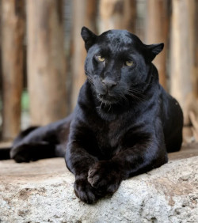

Estou escrevendo da
Rua Manoel Barbosa da Silva, número 11, Bairro Horto, sentado na minha cadeira gamer que me foi concedida pelo meu caro amigo Jake, antes do mesmo se deslocar para Portugal.Como o próprio diria, Ouvi dizer que existe um alerta de tufão
, para afugentar o pessoal folgado que estava presente na casa dele até as 6am.
FOLGADOS demais eu diria
Estou escrevendo esse texto em HTMLpara aprender um pouco mais sobre a linguagem
Simplesmente um Jaguar Preto na sua timeline carai
Sobre a Jaguatirica, nós sabemos que:
"Jaguatirica é um felino de médio porte que ocorre em várias regiões da América. Trata-se de uma espécie que apresenta um padrão de pelagem bastante característico, com pelos amarelados e manchas negras em rosetas abertas que se unem formando bandas no corpo do animal. São animais solitários, territoriais e que apresentam atividade tipicamente noturno-crepuscular. Atualmente, as jaguatiricas estão classificadas na IUCN como pouco preocupantes, mas ainda sofrem com problemas como caça, destruição de habitat e exploração madeireira." Veja mais sobre "Jaguatirica" em: https://brasilescola.uol.com.br/animais/jaguatirica.htm
Portanto, a Jaguatirica é foda